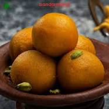

Yummy Dessert Besan Ladoo.
Besan laddu is the most common variety. To prepare it, besan (chickpea flour) is fried in hot ghee (clarified butter). Sugar and cardamom powder are then mixed in. The mixture is formed into balls and allowed to cool and solidify.
Besan Laddu is one of the most popular traditional Indian sweets. Whether it is festive celebrations, religious rituals, or marriage, besan ke laddu is always part of the dessert platter.
Ingredients
- (The roasted chickpea flour is called "besan" in Hindi)Flour
- Fat(ghee/butter/oil)
- Sugar
- other Ingredients as per requirement like Cashew,badam,kismis,etc.
Steps to make a Besan ladoo
- Step 1 : Gram Flour: Never ever be in a hurry to roast the gram flour. That is the soul of this sweet a slow-roasted gram flour. And you need to be around the stove to stir the roasting gram flour continuously.
- Step 2 : Ghee: You can not skim the quantity of ghee while making ladoo or other Indian sweet.
- Step 3 : Powdered Sugar: We do not need castor sugar to make besan ladoo. You can grind granulated white sugar to a coarse powder using a mixer. While adding the powdered sugar, ensure that the flour and ghee mixture is lukewarm to touch and not piping hot.
The making process of besan laddu is very simple and straightforward. All you need to be careful at specific steps.